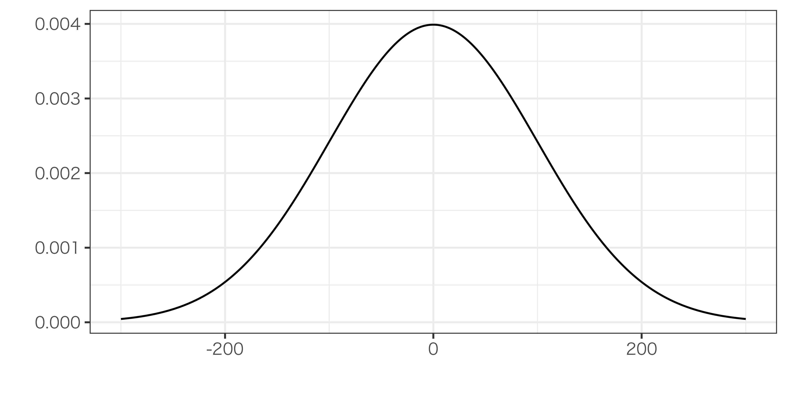
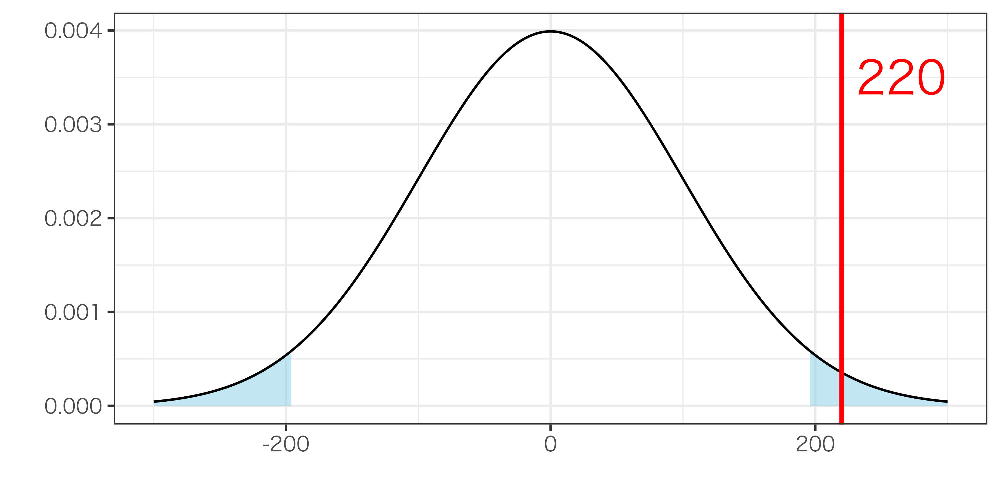

08/統計的仮説検定：基本編
現代政治分析入門2
2026-11-17
出席登録をお願いします

本日の授業の位置付け

例：身長と賃金
推定された傾きは\(\hat{\beta}_{1}=220\)、標準誤差は\(\operatorname{se}(\hat{\beta}_{1})=100\)であったとすると…


t検定 (t-test)
実際のOLS推定値の仮説検定では、\(\hat{\beta}_{1}\)そのものではなく標準誤差で割った\(\frac{\hat{\beta}_{1}}{\operatorname{se}(\hat{\beta}_{1})}\)で検定を行う
- \(\frac{\hat{\beta}_{1}}{\operatorname{se}(\hat{\beta}_{1})}\)を\(t\)値といい、\(t\)値は正規分布ではなく\(t\)分布にしたがう
- \(t\)分布は1908年にウィリアム・ゴセットが発見1
- \(t\)検定はすごくわかりやすい
- \(t\)値がだいたい2以上/-2以下なら統計的有意
- そうでないなら統計的有意でない